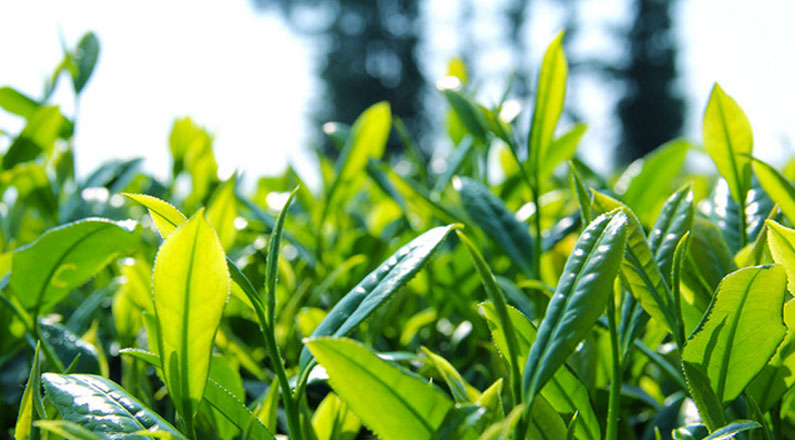

如是果蔬提供以绿色蔬菜为主、全部达到无公害以上标准的优质蔬菜。我们遵循自然的规律，让每一颗果蔬都自由生长，拒绝使用生物调节剂等激素进行人工干预；由田间到餐桌，24h新鲜直达。保证为大家提供的每一份蔬菜的健康和安全。同时，由专业的营养师团队为我们进行菜单设计，以及营养知识分享和培训。
公司现有签约直采基地近百家，种植面积达到数万亩，覆盖近百种蔬菜。我们根据预定量及当次菜单和各基地生产情况安排采摘，统一包装后进行运输和配送。每次的采摘均由专职的品管员现场监督和检查，保证为会员们提供的产品质优量足，保证每一颗蔬菜的新鲜。
为增强客户的体验感，定期组织基地参观、游玩、采摘等活动，让会员们近距离体验健康果蔬的生长和收获！
如是果蔬是一个以国家食品安全标准为依据，以先进的食品安全监测及溯源技术为保障，以线上社群粉丝分享和线下品牌连锁店为推广渠道的，一站式健康食品供应商。